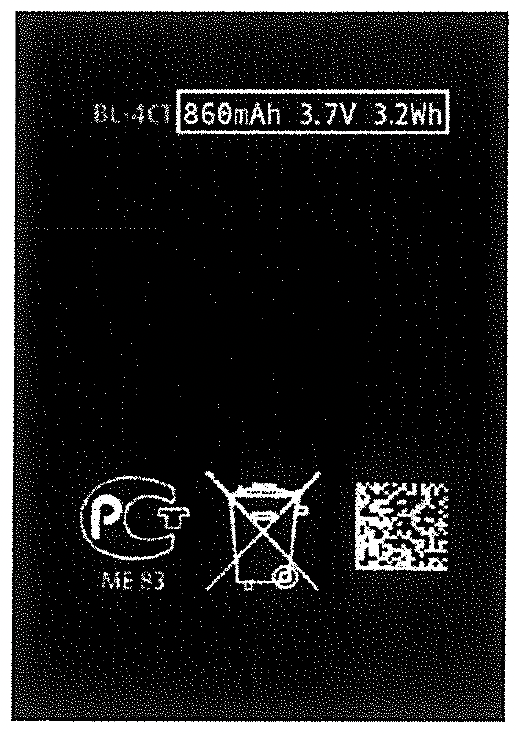
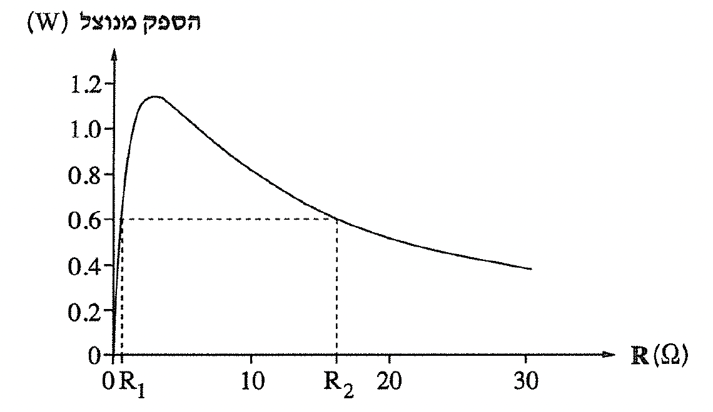

שאלה 2
בתמונה שלפניכם מוצגת סוללה של מכשיר טלפון נייד מן הדור הישן (דור 2).

מאפייני הסוללה הם: כמות האנרגייה האגורה בסוללה, 3.2Wh (ואט × שעה); הכא"מ, 3.7V;
וכמות המטען, 860mAh (מיליאמפר × שעה).
בטאו את כמות האנרגייה האגורה בסוללה בג'ולים (J) ואת כמות המטען בקולון (C). (5 נקודות)
כדי לבדוק את הסוללה, מרכיבים מעגל ובו הסוללה ומכשיר המדמה את הטלפון הנייד.
בבדיקות מודדים את עוצמת הזרם ואת מתח ההדקים במצבי העבודה השונים של המכשיר, לדוגמה: המתנה, שיחה
וגלישה באתר אינטרנט.
בטבלה שלפניכם מוצגות כמה מתוצאות הבדיקה.
| עוצמת הזרם (mA) | 50 | 100 | 200 | 400 | 600 | 800 |
| מתח ההדקים (V) | 3.5 | 3.3 | 3.0 | 2.7 | 2.2 | 1.7 |
על פי התוצאות המוצגות בטבלה, סרטטו גרף של מתח ההדקים כפונקציה של עוצמת הזרם הזורם בסוללה. (7 נקודות)
מצאו על פי הגרף את הכא"מ של הסוללה. פרטו את שיקוליכם.
היעזרו בגרף וחשבו את ההתנגדות הפנימית של הסוללה.
(8 נקודות)
חשבו את ההספק המושקע על ידי הסוללה (Pin) כאשר עוצמת הזרם I = 300mA.
חשבו את ההספק המנוצל על ידי המכשיר (Pout) כאשר עוצמת הזרם I = 300mA.
(8 נקודות)
לפניכם גרף המתאר את ההספק המנוצל על ידי המכשיר כפונקציה של התנגדות המכשיר.

הספק מנוצל של 0.6W מתקבל עבור שתי התנגדויות שונות של המכשיר, R1 ו-R2, R2 > R1 (ראו תרשים 2).
קבעו באיזו התנגדות - R1 או R2 - הסוללה תתחמם יותר. נמקו את קביעתכם. (5 1⁄3 נקודות)